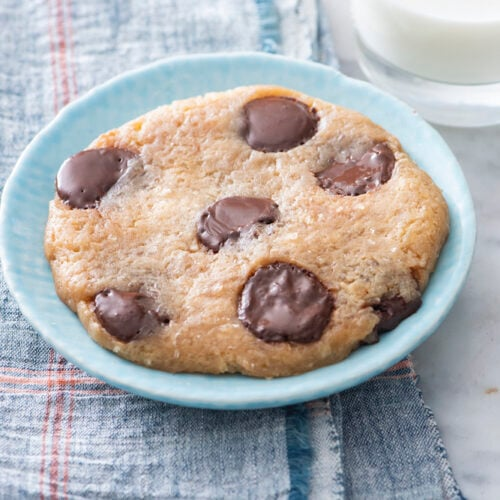

Microwave Cookies

Description
Introducing Microwave Marvels: the cookies that bring the magic of baking
to warp speed! These little bursts of joy are like the 'cheetahs' of the
cookie world - lightning-quick, but oh-so-tasty.
Picture this: a symphony of buttery goodness, sugar's sweet serenade, and
chocolate chips that are like happy little surprises in every bite. These
cookies are like the rockstars of the microwave, putting on a show that'll
make your taste buds dance a conga line!
Ingredients
- 2 tablespoons (28g) unsalted butter
- 2 tablespoons (25g) granulated sugar
- 2 tablespoons (25g) brown sugar
- 1/4 teaspoon vanilla extract
- A pinch of salt
- 1 egg yolk
- 1/4 cup (30g) all-purpose flour
- 2 tablespoons (20g) chocolate chips
Steps
-
Melt the Butter: Place the 2 tablespoons of unsalted butter in a
microwave-safe bowl. Microwave the butter in 10-second increments until
it's fully melted. Be careful not to overheat it; you just want it to be
melted, not boiling.
-
Add Sugars and Vanilla: Stir in the granulated sugar and brown sugar
into the melted butter until well combined. Add the vanilla extract and
a pinch of salt and mix again.
-
Add the Egg Yolk: Separate the egg yolk from the egg white and add the
yolk to the mixture. Mix thoroughly until it's well incorporated.
-
Stir in the Flour: Add the all-purpose flour and mix until you have a
smooth cookie dough. It should be a thick, sticky consistency.
-
Fold in Chocolate Chips: Gently fold in the chocolate chips or any other
mix-ins you prefer, like nuts or raisins.
-
Shape the Cookies: Divide the cookie dough into two equal portions and
shape them into cookie rounds. Place them on a microwave-safe plate,
leaving some space between them.
-
Microwave the Cookies: Microwave the cookies on high for about 40-60
seconds. Cooking times may vary depending on your microwave's wattage
and desired cookie texture. Start with 40 seconds and check. The cookies
should puff up slightly and become firm around the edges but still
slightly soft in the center.
-
Cool and Enjoy: Carefully remove the plate from the microwave (it'll be
hot) and let the cookies cool for a minute or two. They will continue to
firm up as they cool. Then, enjoy your quick and easy microwave cookies!